Accueil lisible, capsule et navigation présentes ; statut et barre de geste contrastés, marges système respectées.
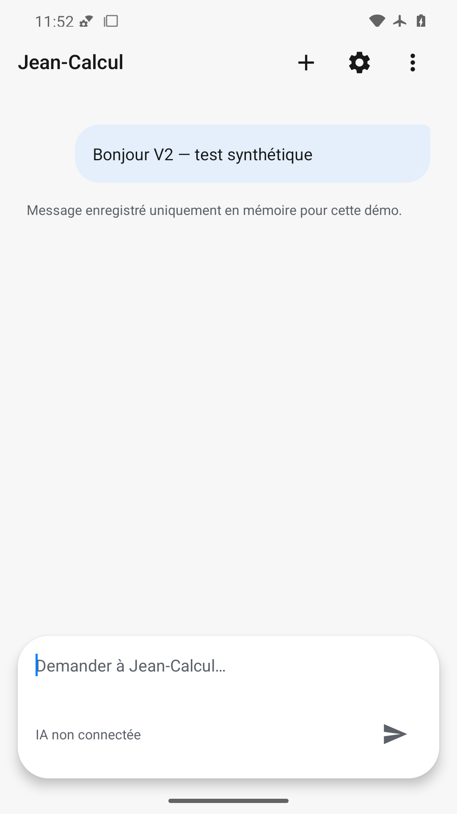
Message et avertissement mémoire lisibles ; clavier absent mais barre de navigation attendue absente, seul le champ reste en bas.
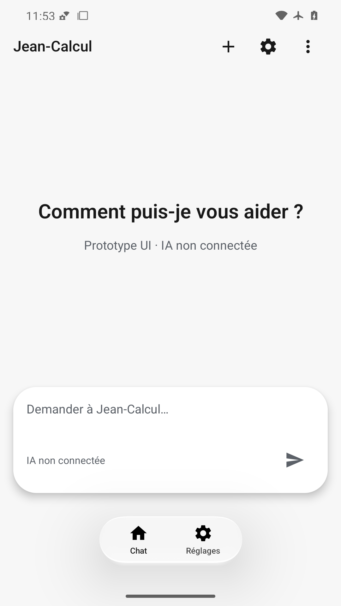
Accueil restauré sans message ; capsule, navigation et actions supérieures visibles.
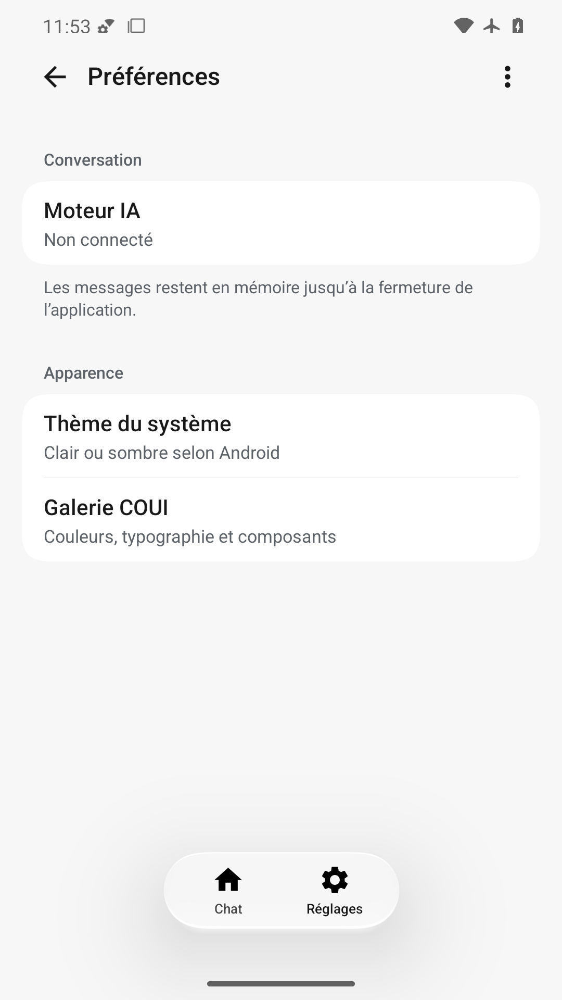
Groupes COUI, résumés et séparation lisibles ; retour et navigation visibles, aucun chevauchement.
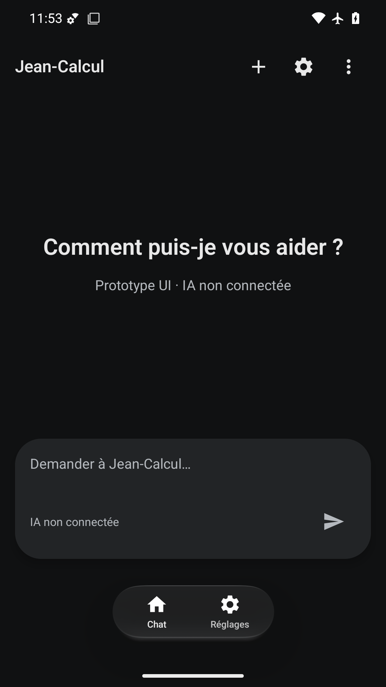
Texte et icônes clairs sur fond sombre, capsule distincte, barre système lisible et navigation présente.
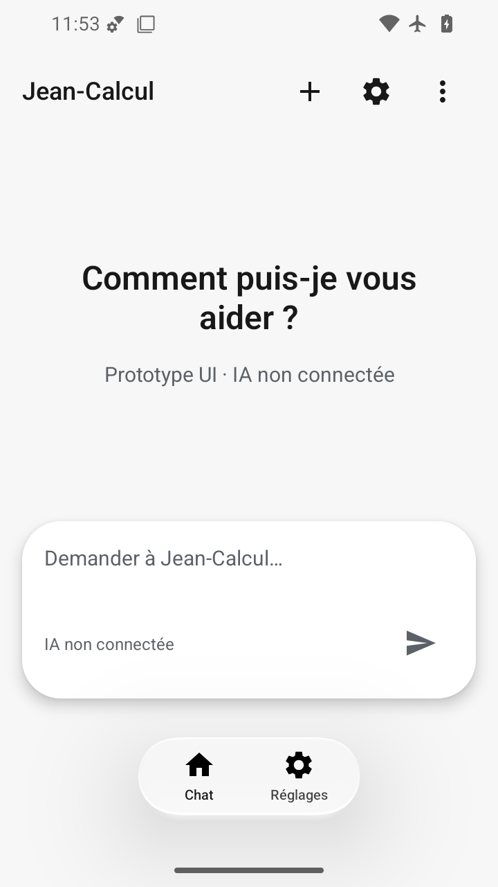
360×640 dp : titre sur deux lignes sans coupure, capsule et navigation accessibles avec marge sous le geste.
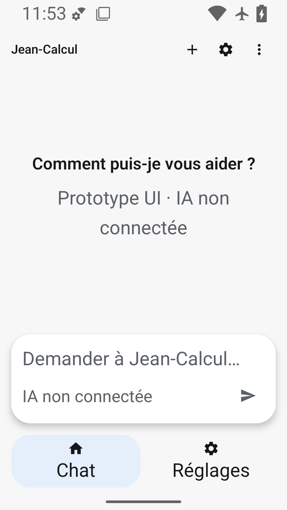
Police 200 % : corps et libellés agrandis non coupés, navigation à hauteur libre ; titres fixes COUI documentés.
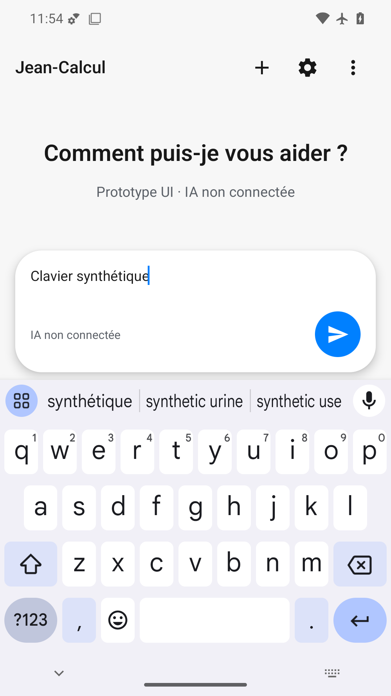
Clavier et bouton Envoyer visibles, saisie lisible ; en-tête et ses actions absents au-dessus du contenu.
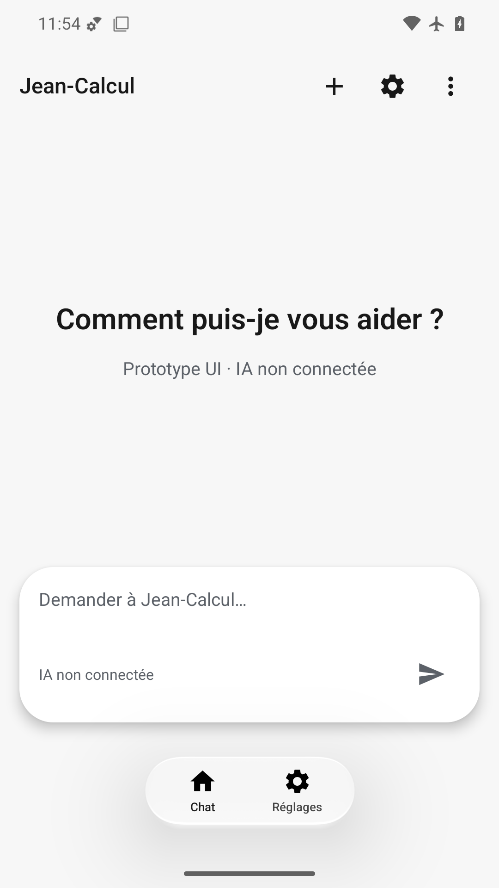
État final lisible avec animations désactivées, capsule et navigation visibles ; une capture statique ne prouve pas la fluidité.
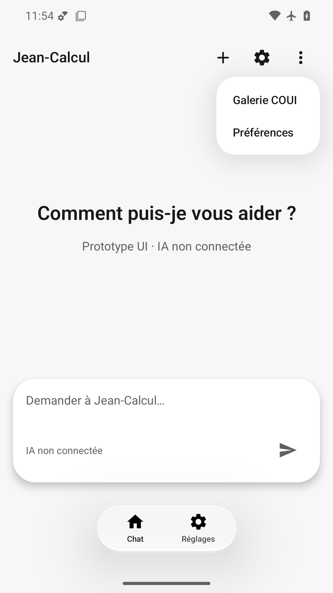
Menu natif ancré à droite, deux choix lisibles sans recouvrement de la saisie ; reste de la page visible.
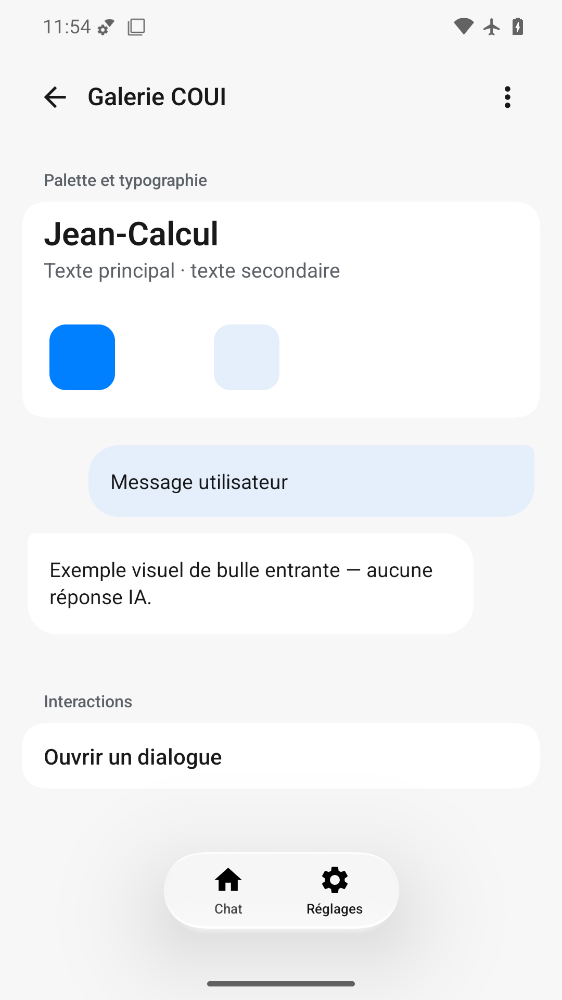
Typographie et bulles lisibles, exemple entrant explicitement illustratif ; icônes et surface de la navigation manquantes, seuls les libellés restent visibles. Le blanc sur blanc de la palette est une limite de présentation.
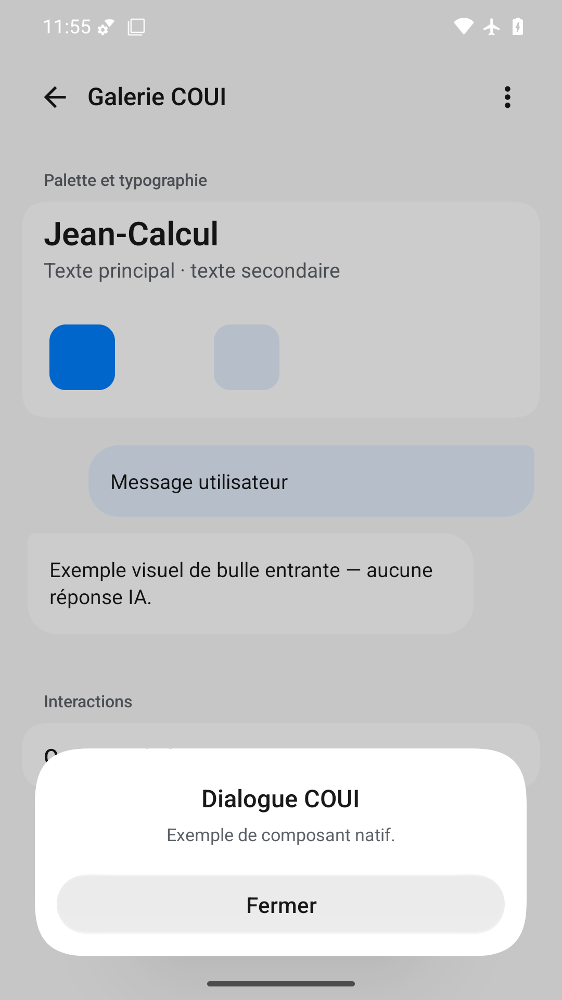
Dialogue natif en bas, titre, message et action Fermer lisibles ; marge au-dessus de la barre de geste, fond assombri.
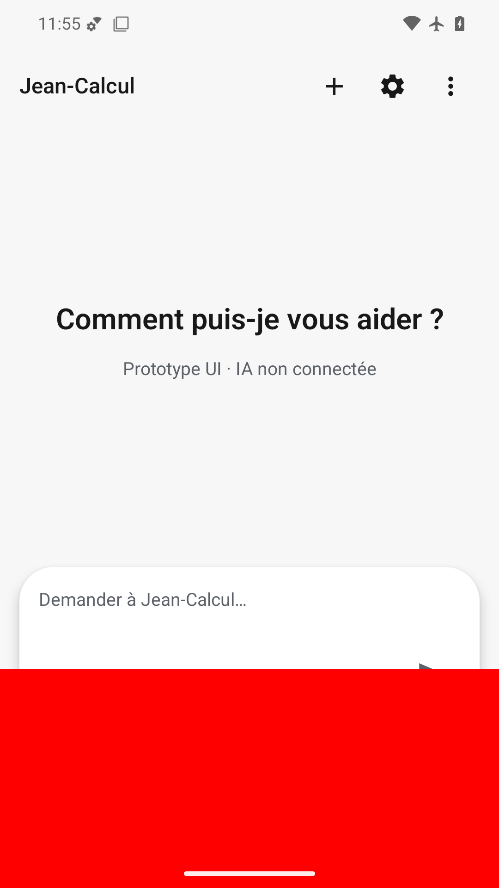
Grande surcouche rouge en bas qui masque la navigation, le bouton Envoyer et une partie de la capsule ; défaut volontaire détecté.